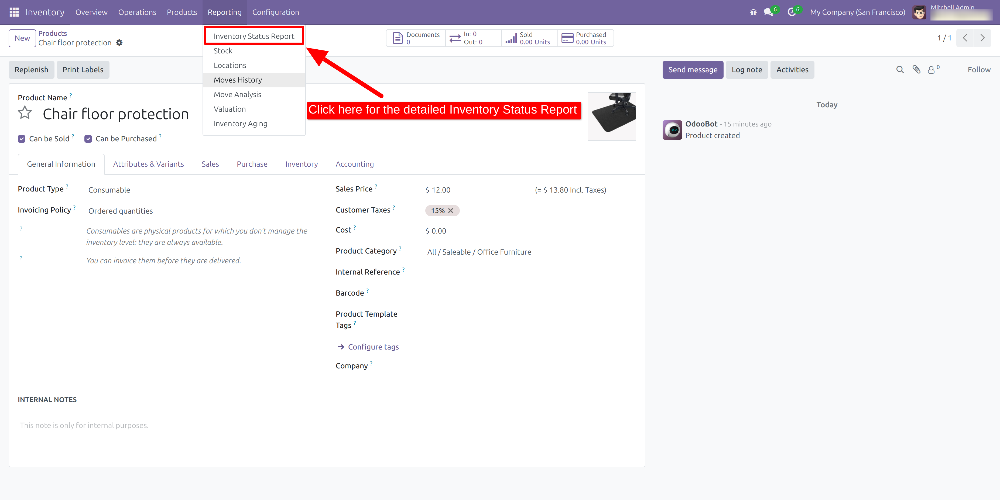
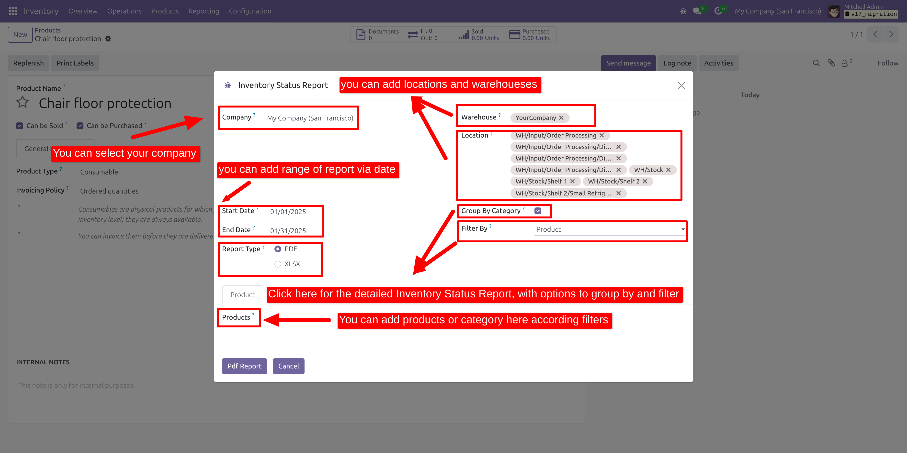
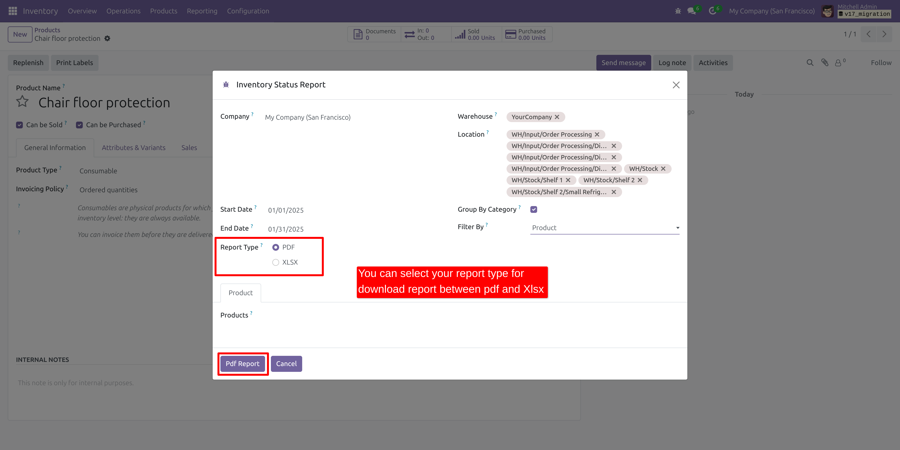
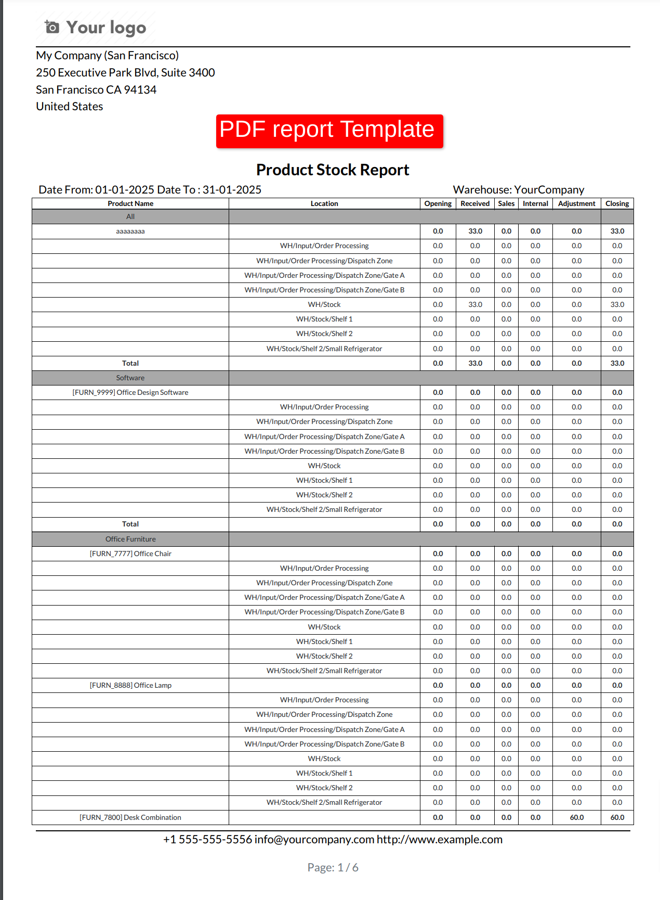
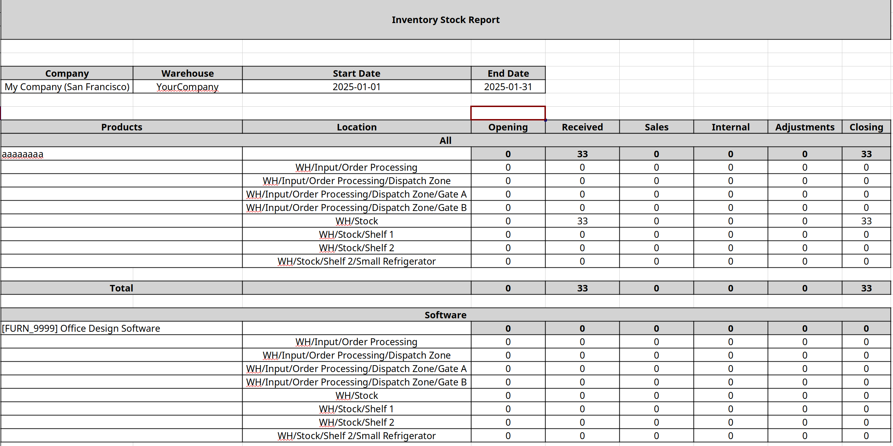

Inventory Status Report
Key Features:
-
Generate Inventory Status Reports in PDF or XLS Format.
-
Supports Multiple Warehouses and Locations.
-
Group Reports by Product Category.
-
Filter Reports by Product or Category.
Go to the main menu and select "Inventory Status Report" to view detailed inventory reports.

To generate a report, select the start date, end date, warehouse, and location. Refine the data using filters like grouping options or filtering by product and category. Finally, generate the report in either PDF or XLS format, as shown below.

Here, you can choose your preferred report format by selecting either PDF or XLSX, based on your requirements.

This is an example of the PDF report format.

This is an example of the XLSX report format.
